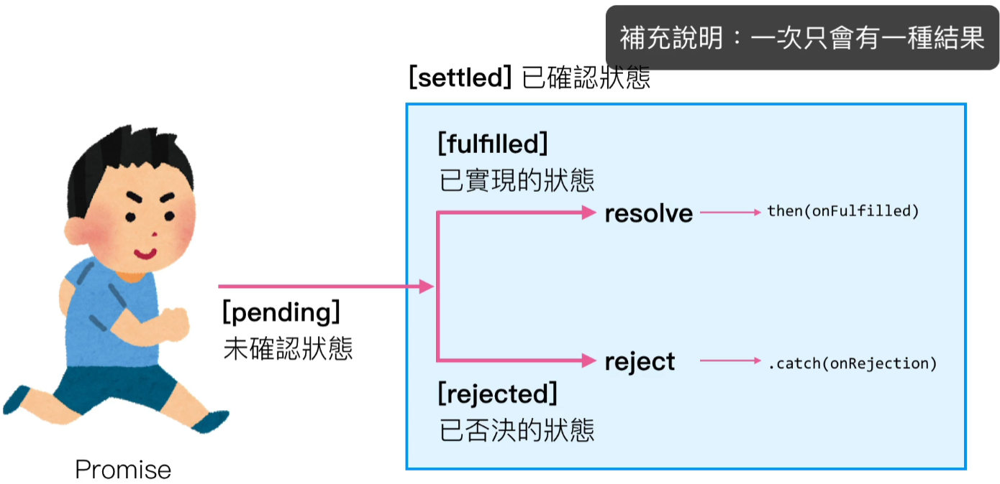
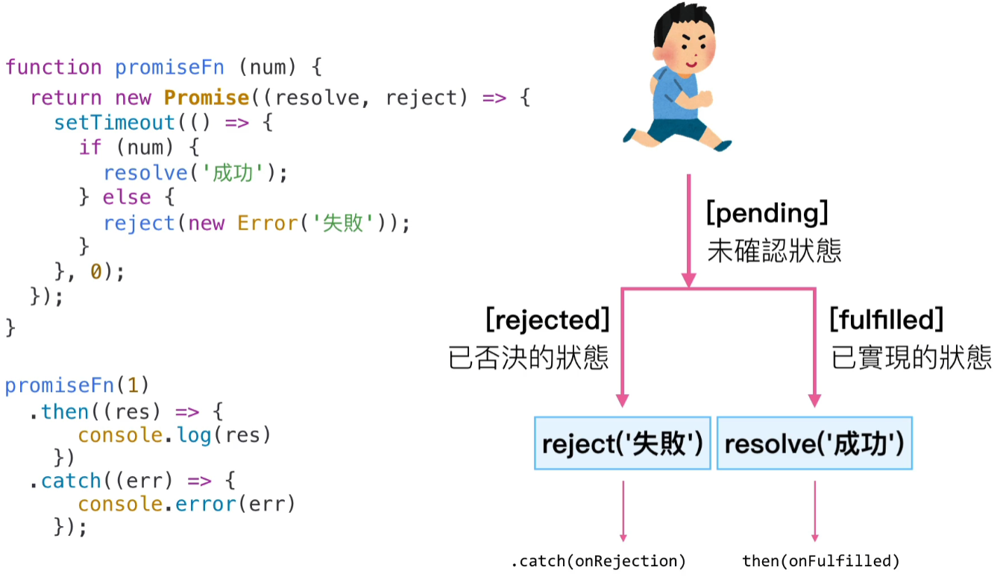

Promise 基礎概念
jQuery.ajax():
https://api.jquery.com/jQuery.ajax/
Axios:
https://github.com/axios/axios
假資料參考 Random User Generator:
https://randomuser.me/documentation
常見的非同步問題（不限於 Ajax）
回呼地獄 ( 非同步行為結束後插入另外一個非同步, 巢狀越來越嚴重 )
寫法不一致 ( .done & success )
無法同時執行（jQuery 有並行寫法，但不直覺）, ( 非同步行為執行時, 無法確保在什麼時間點開始&結束 )
 